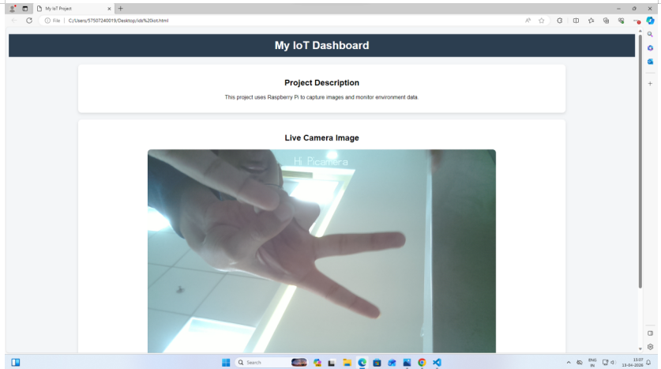

📏 Proximity Distance
18.4
centimeters (cm)
⚙ System Telemetry
- Controller Raspberry Pi (BCM2835)
- Primary Sensor HC-SR04 Ultrasonic
- Warning Threshold < 30.0 cm
- Critical Hazard < 10.0 cm
- Cloud Gateway ThingSpeak REST API
📷 Latest Obstacle Snapshot (Forensic Evidence)
Auto-refreshed on proximity trigger
